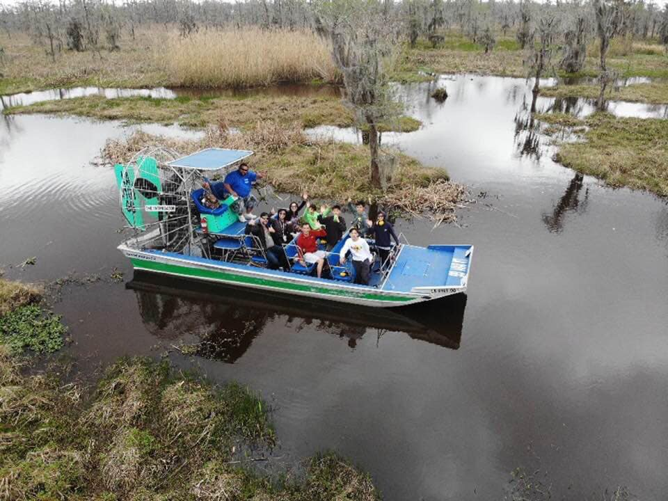
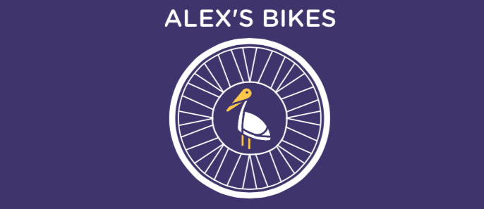

To Do
-
French Quarter Legends Tour

This 2-hour French Quarter Ghost & Legends Tour adventure is offered at 6 pm & 8 pm nightly year round. The tour is also offered at 3 PM December 26 - August 15; and October 1 - November 30. Please arrive 30 minutes prior to departure time at Rev. Zombie's Voodoo Shop, 723 St. Peter Street, between Bourbon & Royal Streets, across from Pat O'Brien's Bar and Preservation Hall.
-
Airboat Swamp Tours

You will travel at high speeds on the airboat tour, but also slow down and stop for pictures. Along the way, you will get a personal tour by your local Captain. Our airboats have stadium style seating, so that the person in front of you does not obstruct your view. Every airboat seat is great for experiencing the tour and viewing the wildlife. Gators will get close……. real close!!! So close that you will be able to look into those reptilian eyes.
-
Bike Rental

You will travel at high speeds on the airboat tour, but also slow down and stop for pictures. Along the way, you will get a personal tour by your local Captain. Our airboats have stadium style seating, so that the person in front of you does not obstruct your view. Every airboat seat is great for experiencing the tour and viewing the wildlife. Gators will get close……. real close!!! So close that you will be able to look into those reptilian eyes.